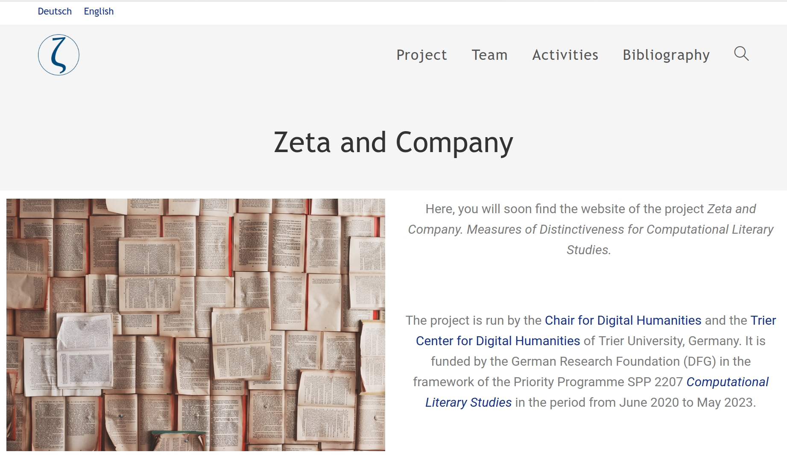
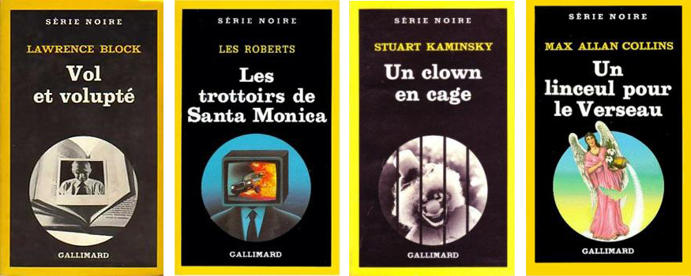
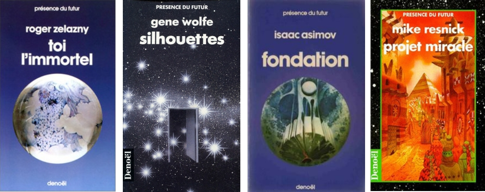
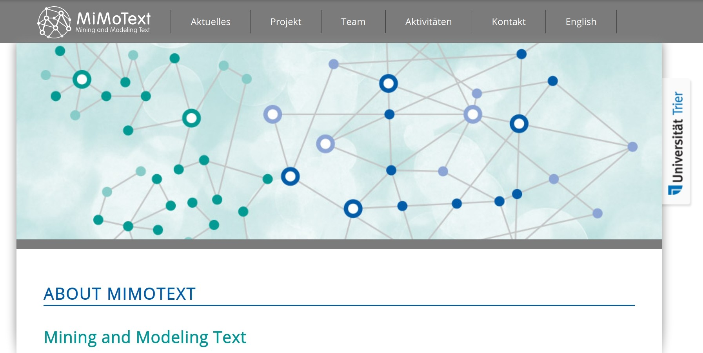
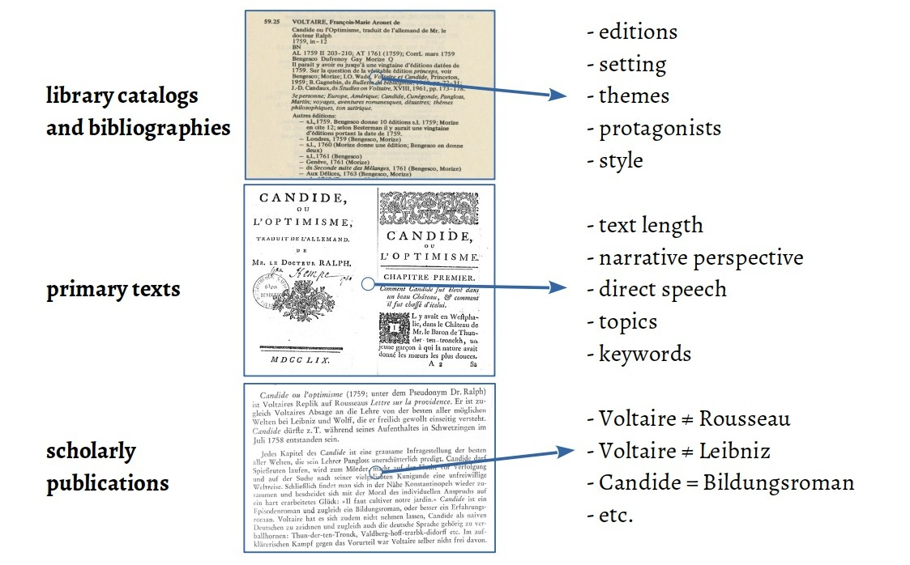
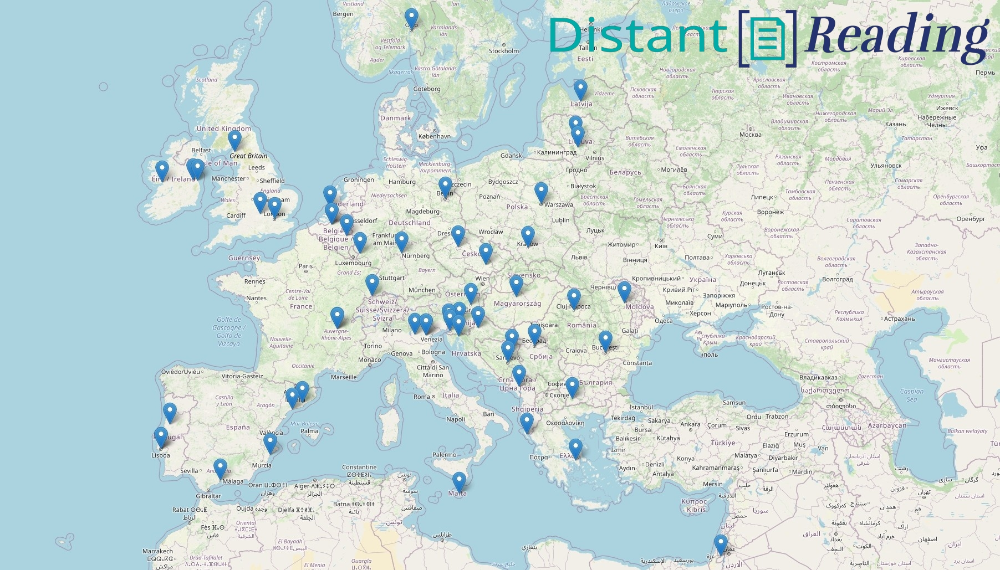

# Current Challenges<br/>in Computational Literary Studies <br/> <hr/> <br/>Christof Schöch<br/>(TCDH, Trier University, Germany) <br/><br/> <hr/> <p><strong><emph>CDH 2020</emph> | Shanghai Library | Oct 19-21 2020</strong></p> <hr/> <img height="60" data-src="img/basics/uni-trier.png"> :: - Hello, everyone. - Thank you for the invitation to this conference - I'm sorry I can only join you by videoconference - I will speak about "Computational Literary Studies" today - I know many of you are interested in Digital History - The challenges I will speak about are quite general, - so I hope my remarks will still be relevant to you -- ## Overview 1. [Operationalization | 操作化](#/3) 1. [Metadata | 元数据](#/4) 1. [Diversity | 多样性](#/5) 1. [Open Access | 开放获取](#/6) :: - I will briefly introduce the field of Computational Literary Studies - And I will then speak about four major, high-level challenges I see for the field - I believe it is really important that these challenges continue to be addressed, going into the future - Computational Literary Studies (CLS) is a subfield of Digital Humanities concerned with using methods from Computer Science and Statistics for the investigation of literary texts. - CLS has a long tradition within Digital Humanities. - Research questions in CLS are in part those of established literary studies, in part those arising from the transposition of methods from Computer Science and Statistics into the literary domain. -- ## Challenge 1:<br/><br/>Operationalization<br/>操作化 --- ### Why is "operationalization" important? * Operationalization makes a research<br/> question or a hypothesis computable and verifiable <!-- .element: class="fragment" data-fragment-index="1" --> * Operationalization creates an explicit<br/> link between concepts and formal features <!-- .element: class="fragment" data-fragment-index="2" --> --- ### Challenges in operationalization * Operationalization creates increased complexity <!-- .element: class="fragment" data-fragment-index="1" --> * But it also makes that complexity more manageable <!-- .element: class="fragment" data-fragment-index="2" --> --- ### Example: "Keyness" in the *Zeta and Company* project </img> <br/>https://zeta-project.eu/en/ :: - This is a project about measures of keyness - "Keyness" refers to words, or other features, that are characteristic of a group of texts when comparing it to another group of texts - We want to model, implement, evaluate keyness --- ### Crime fiction vs. science fiction <b>crime fiction</b> (Gallimard, Série noire): </img> <br/> <b>science fiction</b> (Denoël, Présence du futur): </img> :: - Our data is the contemporary French novel - We focus on popular subgenres like crime fiction and science fiction - Here you see some book covers for crime fiction and science fiction --- ### What is keyness? * Concepts <!-- .element: class="fragment" data-fragment-index="1" --> * aboutness * distinctiveness * salience * etc. * measures <!-- .element: class="fragment" data-fragment-index="2" --> * log-likelihood ratio * t-test * Burrows Zeta * etc. :: - Concepts: - Aboutness: words that express the content of the subgenres - Distinctiveness: words that help distinguish one subgenre from another - Salience: words that readers notice when reading novels from the subgenre - Measures - log-likelihood: compares frequencies across groups - t-test: compares frequency distibutions - Zeta: compares the dispersion of words - **Key issue**: - how do measures and concepts relate to each other? - t-test has a bias for function words, and is related to distinctiveness - Burrows Zeta has a bias for content words, and is related to aboutness - This needs to be clarified before using such measures. -- ## Challenge 2:<br/><br/>Metadata<br/>元数据 --- ### Why is metadata crucial? * Small, well-understood corpora:<br/>metadata is easy to generate, less needed <!-- .element: class="fragment" data-fragment-index="1" --> * Large, unexplored corpora:<br/>metadata is crucial, hard to generate <!-- .element: class="fragment" data-fragment-index="2" --> * Crucial for going beyond the canon <!-- .element: class="fragment" data-fragment-index="3" --> * knowing the population: sampling * interpreting quantitative results :: - First wave of CLS used relatively small corpora (dozens, sometimes a few hundred texts) - Current wave of CLS is about ever larger text collections - First thousands, now millions of books: HathiTrust: now 17 million volumes - So metadata also helps us do analyses beyond the canon (see challenge #2: diversity) - (a) Without a documentation of the statistical population, you can't create representative samples - (b) When you can't read the documents in your corpus, you need metadata to explain results --- ### Challenge of metadata * CLS needs a complete record of literary production <!-- .element: class="fragment" data-fragment-index="1" --> * CLS needs relevant, detailed, accurate metadata on texts <!-- .element: class="fragment" data-fragment-index="2" --> * author: gender, related authors, etc. * setting: space, time * type: subgenre, etc. * content: themes, plot, protagonists * properties: e.g. proportion of direct speech :: - First need: complete documentation of literary production (population) - Second need: relevant, detailed, accurate metadata on individual texts - But: Library catalogs usually don't have these - So we need to generate metadata ourselves! (Agenda) --- ### Example: *Mining and Modeling Text* </img> <br/>https://mimotext.uni-trier.de/aktuelles/english --- ### CLS Agenda: Generate metadata </img> <br/>Example: *Candide* by Voltaire :: - from bibliographies and library catalogs - from scholarly publications - from primary texts - Then, model it as an information network - In the form of Linked Open Data - Goal: Wikidata for Literary History -- ## Challenge 3:<br/><br/>Diversity<br/>多样性 :: - The DH open up an opportunity for diversity - We have the chance to base our research on more than just a few most famous works - in CLS, this means we can better understand the dynamics of literary history - And better understand the meaning of literature for people --- ### Distant Reading for European Literary History <a href="img/map-of-action-members.html"></img></a> <br/>https://distant-reading.net :: - I would like to illustrate the challenges of this in CLS by speaking about a project called "Distant Reading for European Literary History" - The key aim of this project is to create a multilingual corpus of novels - 100 novels from as many different European languages as we can - At the moment, we are working on 17 different languages --- ### Dimensions of diversity * In corpus building and text analysis <!-- .element: class="fragment" data-fragment-index="1" --> * Literary production in multiple languages * Highly-canonized and forgotten novels * Gender balance in authorship * Wide range of kinds of novels * In the community we create <!-- .element: class="fragment" data-fragment-index="2" --> * Diversity of career stages * Gender balance * Researchers from less research-intensive countries :: - In this project, there are several dimensions of diversity that are relevant - regarding corpus building and text analysis (name them) - regarding the community we create in the project (name them) - Very important to me: diversity not for the people, but with the people! - In this sense, this is really a "grass-roots" project --- ### Challenges * Digitization tends to be non-diverse (!) <!-- .element: class="fragment" data-fragment-index="1" --> * driven by canonicity * focused on few authors * Corpus building: "paradox of diversity" <!-- .element: class="fragment" data-fragment-index="2" --> * support diversity of languages * support diversity within each collection :: - Digitization - Digitization is driven by canonicity - Paradox - We want to encourage a diversity of languages, including smaller literary traditions - And we want to encourage a diverse corpus composition (women, non-canonized, early) - But: for smaller languages, diverse composition is hard! - So: by pushing on one side, we lose on the other side - We need to balance both -- ## Challenge 4:<br/><br/>Open Access<br/>开放获取 --- ### Open Access * Open Access means <!-- .element: class="fragment" data-fragment-index="1" --> * the right to access, modify, analyse, redistribute materials * with minimal technical, financial and legal obstacles * Open Access concerns <!-- .element: class="fragment" data-fragment-index="2" --> * scholarly publications * primary sources (literary texts) * Open Access is an essential component of Open Science <!-- .element: class="fragment" data-fragment-index="3" --> --- ### Why is Open Access important? * Open Access enables research into our most recent cultural history <!-- .element: class="fragment" data-fragment-index="1" --> * Open Access is an essential component of Open Science <!-- .element: class="fragment" data-fragment-index="2" --> * transparent * reproducible * sustainable --- ### A challenge in all our projects * Distant Reading <!-- .element: class="fragment" data-fragment-index="1" --> * Focus determined by copyright: pre-1920 texts only * this allows us to practice Open Science * Mining and Modeling Text <!-- .element: class="fragment" data-fragment-index="2" --> * We rely on a copyright exception for Text Mining * But we can't publish the texts underlying our extracted metadata * Zeta and company <!-- .element: class="fragment" data-fragment-index="3" --> * 20th-century novels: we can't distribute our corpora * limited transparency and reproducibility --- ### Challenges of Open Access * Create a new balance * between legitimate copyright interests * and the benefits of excellent research for society * Create new institutional roles of academia * As distributors of scholarly publications * As creators of digital resources :: - New balance - New roles - Also: work beyond academia -- ## Conclusion --- ### Four Challenges of CLS 1. Operationalization: "deconstruction" of concepts and measures <!-- .element: class="fragment" data-fragment-index="1" --> 2. Diversity: increase diversity in research objects and the research community <!-- .element: class="fragment" data-fragment-index="2" --> 3. Metadata: generate metadata for very large corpora <!-- .element: class="fragment" data-fragment-index="3" --> 4. Open Access: look beyond purely scholarly concerns <!-- .element: class="fragment" data-fragment-index="4" --> --- # Thank you for your kind attention<br/><br/>谢谢您的关注 <br/><br/> <br/><br/> <br/><br/> <hr/> <small> <br/>Trier Center for Digital Humanities: <a href="https://www.tcdh.uni-trier.de/en/">tcdh.uni-trier.de/en/</a> <br/> <br/>Licence: <a href="https://creativecommons.org/licenses/by/4.0/">Creative Commons Attribution (CC BY)</a>, 2020. </small> <hr/>